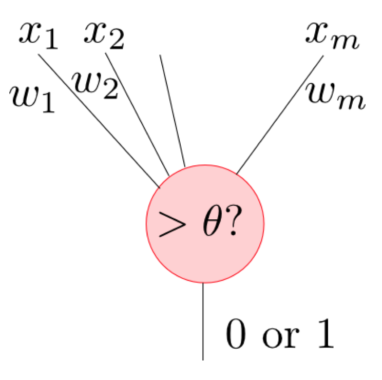

<!doctype html>
<html lang="ja">
  <head>
    <meta charset="utf-8">
    <meta name="viewport" content="width=device-width, initial-scale=1">
    <link rel="stylesheet" href="../../static/css/atom.min.css">
    <!--
      Hi source code lover!!

      I don't want to be a YouTuber.
      I want to make a platform where people can share and learn college knowledge one another.
      If you are interested it, please get in touch with me. (Twitter: @cabernet_rock)
    -->

    <!-- SEO -->
    <title>10 minutes PRML Chapter 5</title>
    <meta name="description" content="Learn Pattern Recognition and Machine Learning in 10 minutes.">

    <!-- URL CANONICAL -->
    <!-- <link rel="canonical" href="http://your-url.com/permalink"> -->

    <!-- Google Fonts -->
    <link href="https://fonts.googleapis.com/css?family=Roboto:100,100i,300,300i,400,400i,700,700i%7CMaitree:200,300,400,600,700&amp;subset=latin-ext" rel="stylesheet">

    <!-- CSS Base -->
    <link rel="stylesheet" type='text/css' media='all' href="prml_static/css/webslides.css">

    <!-- Optional - CSS SVG Icons (Font Awesome) -->
    <link rel="stylesheet" type="text/css" media="all" href="prml_static/css/svg-icons.css">

    <!-- SOCIAL CARDS (Open Graph protocol) -->
    <!-- FACEBOOK -->
    <meta property="og:url" content="https://iwasakishuto.github.io">
    <meta property="og:type" content="article">
    <meta property="og:title" content="10 minutes PRML Chapter 5">
    <meta property="og:description" content="Learn Pattern Recognition and Machine Learning in 10 minutes.">
    <meta property="og:image" content="prml_static/images/share-webslides.jpg" >

    <!-- TWITTER -->
    <meta name="twitter:card" content="summary_large_image">
    <meta name="twitter:creator" content="@cabernet_rock">
    <meta name="twitter:title" content="10 minutes PRML Chapter 5">
    <meta name="twitter:description" content="Learn Pattern Recognition and Machine Learning in 10 minutes.">
    <meta name="twitter:image" content="prml_static/images/share-webslides.jpg">

    <!-- FAVICONS -->
    <link rel="shortcut icon" sizes="16x16" href="prml_static/images/favicons/favicon.png">
    <link rel="shortcut icon" sizes="32x32" href="prml_static/images/favicons/favicon-32.png">
    <link rel="apple-touch-icon icon" sizes="76x76" href="prml_static/images/favicons/favicon-76.png">
    <link rel="apple-touch-icon icon" sizes="120x120" href="prml_static/images/favicons/favicon-120.png">
    <link rel="apple-touch-icon icon" sizes="152x152" href="prml_static/images/favicons/favicon-152.png">
    <link rel="apple-touch-icon icon" sizes="180x180" href="prml_static/images/favicons/favicon-180.png">
    <link rel="apple-touch-icon icon" sizes="192x192" href="prml_static/images/favicons/favicon-192.png">

    <!-- Android -->
    <meta name="mobile-web-app-capable" content="yes">
    <meta name="theme-color" content="#333333">

    <!-- Syntax highlight -->
    <link rel="stylesheet" href="https://cdnjs.cloudflare.com/ajax/libs/highlight.js/8.6/styles/github.min.css">
    <script src="https://cdnjs.cloudflare.com/ajax/libs/highlight.js/8.6/highlight.min.js"></script>
    <script>hljs.initHighlightingOnLoad();</script>
    <!-- Tex -->
    <!-- Local env -->
    <!--
    <script type="text/javascript" src="http://cdn.mathjax.org/mathjax/latest/MathJax.js?config=TeX-AMS_HTML"></script>
    -->
    <!-- Github env -->
    <script type="text/javascript" async src="//cdn.mathjax.org/mathjax/latest/MathJax.js?config=TeX-MML-AM_CHTML"></script>
    <script type="text/x-mathjax-config">
      MathJax.Hub.Config({
        tex2jax: {
          inlineMath: [ ['$','$'], ["\\(","\\)"] ],
          displayMath: [ ['$$','$$'], ["\\[","\\]"] ]
        }
      });
    </script>
  </head>

  <body>
    <header role="banner">
      <nav role="navigation">
        <ul>
          <li class="github">
            <a rel="external" href="#" title="YouTube">
              <svg class="fa-youtube">
                <use xlink:href="#fa-youtube"></use>
              </svg>
              <em>Colledge Knowledge</em>
            </a>
          </li>
          <li class="twitter">
            <a rel="external" href="https://twitter.com/cabernet_rock" title="Twitter">
              <svg class="fa-twitter">
                <use xlink:href="#fa-twitter"></use>
              </svg>
              <em>@cabernet_rock</em>
            </a>
          </li>
        </ul>
      </nav>
    </header>

    <main role="main">
      <article id="webslides">

        <!-- Quick Guide
          - Each parent <section> in the <article id="webslides"> element is an individual slide.
          - Vertical sliding = <article id="webslides" class="vertical">
          - <div class="wrap"> = container 90% / <div class="wrap size-50"> = 45%;
        -->

        <section class="bg-apple">
          <h1>§5 Neural Networks</h1>
        </section>

        <section class="bg-apple">
          <div class="wrap">
            <div class="grid vertical-align">
              <div class="column">
                <h2>単純パーセプトロン</h2>
                <p class="text-intro">perceptron</p>
                <p>ニューラルネットワークは多数の素子（パーセプトロン）の集まりで表現されます。そこで、まずは一つ一つの素子を見ていきます。</p>
                <p>一つの素子は右の図のように表され、入力を受け取り、その値がある閾値 $\theta$ を超えたら発火して出力し、$\theta$ 以下だったら出力しない、という性質を持ちます。数学的に記述すると、</p>
                <ul class="description">
                  <li>重みパラメータ：$w_0,w_1,\ldots,w_m$</li>
                  <li>活性化関数：$h$</li>
                </ul>
                <p>から構成され、以下のような関数を表します。
                $$f(x_1,x_2,\ldots,x_m) = h(w_1x_1+w_2x_2+\cdots+w_mx_m+w_0)$$</p>
              </div>
              <div class="column">
                <figure>
                  
                </figure>
              </div>
            </div>
          </div>
        </section>

        <section class="bg-apple">
          <div class="wrap">
            <div class="grid vertical-align">
              <div class="column">
                <h2>重みパラメータ</h2>
                <p class="text-intro">weight parameter</p>
                <p>今までに出て来た重み $\mathbf{w}$ と同じ役割をします。入力 $x_i$ の重要度を $w_i$ が表しているとも言えます。</p>
                <h2>活性化関数</h2>
                <p class="text-intro">activation function</p>
                <p>ある閾値 $\theta$ を超えたら発火して出力し、$\theta$ 以下だったら出力しない、という神経の性質を表現するため、以下の<b><font color="red">ヘヴィサイド関数(Heaviside function)</font></b>などが利用されます。
                $$h(a) = \left\{\begin{array}{cc}0 & (\theta < 0) \\1 & (\theta > 0)\end{array}\right.$$</p>
              </div>
              <div class="column">
                <p>この性質は表したい能力を如実に表していますが、不連続であり扱いづらいため、ロジスティックシグモイド関数
                $$h(a) = \frac{1}{1+\exp(-a)}$$や、それと等価な能力を持つハイパボリックタンジェント関数
                $$h(a) = \tanh (a)$$ソフトマックス関数
                $$h(\mathbf{a}) = \frac{\exp(a_i)}{\sum_j \exp(a_i)}$$などが用いられることが多いです。</p>
              </div>
            </div>
          </div>
        </section>

        <section class="bg-apple">
          <div class="wrap">
            <div class="grid vertical-align">
              <div class="column">
                <h2>多層パーセプトロン</h2>
                <p class="text-intro">Multilayer Perceptron</p>
                <p>それでは、一つの単子（単純パーセプロトン）を繋げて２層のパーセプトロンを作って見ましょう。なお、２層以上のパーセプトロンを<font color="red"><b>ニューラルネットワーク</b></font>と言います。</p>
                <p>例えば１層目に $m$ 個の素子を用意し、入力が $D$ 次元の場合、
                $$y = h_2\left(\sum_{i=0}^{m} w^{(2)}_ih_1\left(\sum_{j=0}^{D}w^{(1)}_{ij} x_j\right)\right)$$となります。</p>
                <p>ただし、それぞれの記号の意味は以下の通りです。
                  <li>$w^{(1)}_{ij}$ は１層目の $i$ 番目の素子の入力 $j$ の重み
                  <li>$w^{(2)}_i$ は２層目の素子の入力 $i$ の重み
                  <li>$h_1,h_2$ はそれぞれの層の活性化関数
                </p>
              </div>
              <div class="column">
                <figure>
                  
                </figure>
              </div>
            </div>
          </div>
        </section>

        <section class="bg-apple">
          <div class="wrap">
            <div class="grid vertical-align">
              <div class="column">
                <h2>多層パーセプトロン</h2>
                <p class="text-intro">多層にする意味</p>
                <p>この時何が起こるのでしょうか？線形識別モデルと先ほど導出した２層のパーセプトロンを比べて見ます。</p>
                <li>線形識別モデル
                  $$ y=f\left(\sum_i w_i\color{red}\phi_i(\mathbf{x})\right) $$
                </li>
                <li>２層のパーセプトロン
                  $$ y = h_2\left(\sum_{i=0}^{m} w^{(2)}_i\color{red}h_1\left(\sum_{j=0}^{D}w^{(1)}_{ij} x_j\right)\right) $$
                </li>
              </div>
              <div class="column">
                <p>これより、基底 $\phi_i(\mathbf{x})$ が $\displaystyle h_1\left(\sum_{j=0}^{D}w^{(1)}_{ij} x_j\right)$ に置き換わっていることがわかります。</p>
                <p>どういうことかというと、<font color="red"><b>今まで固定されていた基底関数が、多層になることで適応的に変動するようになる</b></font>ということです。</p>
                <p>これより、十分大きな $m$ をとった多層パーセプトロンは、任意の関数を任意の精度で近似することができる、という性質を持ちます。</p>
              </div>
            </div>
          </div>
        </section>

        <section class="bg-apple">
          <div class="wrap">
            <div class="grid vertical-align">
              <div class="column">
                <h2>誤差逆伝播法</h2>
                <p class="text-intro">back propagation</p>
                <p>ニューラルネットワークについて語る上で避けては通れなく、理解が難しいのが<font color="red"><b>誤差逆伝播法（back propagation）</b></font>です。</p>
                <p>しかし、誤差逆伝播法とはニューラルネットワークを訓練する際に用いられる効率的な計算方法のことで、<font color="red"><b>「ただの合成関数の微分則」</b></font>です。</p>
                <li>素子 $i$ の出力を $z_i$</li>
                <li>素子 $j$ への入力和を $a_j$</li>
                <p>として、説明します。</p>
              </div>
              <div class="column">
                <p>ここで、ニューラルネットワークの訓練とは、訓練データの出力と正解の誤差 $E_n(\mathbf{w})$ を最小化することです。</p>
                <p>つまり、素子 $i$ から素子 $j$ への接続の重みを $w_{ji}$ として、 全ての $i,j$ の組合せ（＝全ノードの重み）に対して$ \frac{\partial E_n}{\partial w_{ji}} $を計算する事が目標となります。</p>
                <figure>
                  
                </figure>
              </div>
            </div>
          </div>
        </section>

        <section class="bg-apple">
          <div class="wrap">
            <div class="grid vertical-align">
              <div class="column">
                <h2>誤差逆伝播法</h2>
                <p class="text-intro">back propagation</p>
                <p>すると、<font color="red"><b>「$E_n$ は $a_j$ を介してのみ $w_{ji}$ に依存する」</b></font>（＝ $w_{ji}$ が変化すると $a_j$ が変化し、それが $E_n$ に影響を及ぼす）事に注意すれば
                $$ \frac{\partial E_n}{\partial w_{ji}} = \frac{\partial E_n}{\partial a_j}\frac{\partial a_j}{\partial w_{ji}}$$
                となります。</p>
                <p>さらに、$\delta_j = \partial E_n/\partial a_j$ と書くことにし、これを<font color="red"><b>誤差</b></font>と呼びます。</p>
              </div>
              <div class="column">
                <figure>
                  
                </figure>
              </div>
            </div>
          </div>
        </section>

        <section class="bg-apple">
          <div class="wrap">
            <div class="grid vertical-align">
              <div class="column">
                <h2>誤差逆伝播法</h2>
                <p class="text-intro">back propagation</p>
                <p>続いて、$\delta_i$ について考えると、 $E_n$ は素子 $i$ の出力を受け取る素子 $j$ の入力 $a_j$ を介して $a_i$ に依存するので、合成微分則より
                $$ \delta_i = \frac{\partial E_n}{\partial a_i} = \sum_j \frac{\partial E_n}{\partial a_j}\frac{\partial a_j}{\partial a_i} = \sum_j\delta_j\frac{\partial a_j}{\partial a_i}$$
                となります。</p>
              </div>
              <div class="column">
                <figure>
                  
                </figure>
              </div>
            </div>
          </div>
        </section>

        <section class="bg-apple">
          <div class="wrap">
            <div class="grid vertical-align">
              <div class="column">
                <h2>誤差逆伝播法</h2>
                <p class="text-intro">back propagation</p>
                <p>さらに、素子 $i$ の活性化関数を $h_i$ とすると、
                $$a_j = \sum_i w_{ji} h_i(a_i)$$だった（素子 $i$ への入力和を活性化関数に通しそれぞれに重み $w_{ji}$ をかけた和を素子 $j$ に伝える）ので、
                $$ \frac{\partial a_j}{\partial a_i} = w_{ji} h_i'(a_i) $$となります。</p>
              </div>
              <div class="column">
                <figure>
                  
                </figure>
              </div>
            </div>
          </div>
        </section>

        <section class="bg-apple">
          <div class="wrap">
            <div class="grid vertical-align">
              <div class="column">
                <h2>誤差逆伝播法</h2>
                <p class="text-intro">back propagation</p>
                <p>ここまでをまとめると、誤差 $\delta_i$ の<font color="red"><b>逆伝播公式</b></font>
                $$ \delta_i = h_i'(a_i) \sum_j w_{ji}\delta_j $$が得られます。</p>
                <p>ここで、ネットワークの出力部における $\delta$ の値は直接計算する事が出来るので、そこから逆にネットワークを辿りながら各 $\delta$ を計算する事になります。各 $w_{ji}$ に対する $W$ 個の偏導関数を一回の誤差伝播で求めてしまう事が出来るので、大変効率の良いアルゴリズムとなっています。</p>
              </div>
              <div class="column">
                <p class="text-intro">【まとめ】</p>
                <ol>
                  <li>データ $\mathbf{x}_n$ を入力した時の、各素子への入力 $a_i$、 出力 $z_i$ を求める</li>
                  <li>ネットワークの出力部における誤差 $\delta_i$ を計算する</li>
                  <li>逆伝播公式を利用して各素子における $\delta_i$ を計算する。
                  $$\delta_i = h_i'(a_i) \sum_j w_{ji}\delta_j$$</li>
                  <li>以下を利用して必要な偏微分係数を求める。
                  $$\frac{\partial E_n}{\partial w_{ji}} = \delta_j z_i$$</li>
                </ol>
              </div>
            </div>
          </div>
        </section>

        <section class="bg-apple">
          <div class="wrap">
            <div class="grid vertical-align">
              <div class="column">
                <h2>実装例</h2>
                <p class="text-intro">Sample</p>
                <p>ここで、ニューラルネットワークが基底関数の形を変化させることができることを確認できる<a href="prml_static/images/Chap5/Neural Network.py" download="Neural_Network.py">プログラム</a>を用意しました。</p>
                <li>$y = x^2$</li>
                <li>$y = \sin x$</li>
                <li>$y = |x|$</li>
                <p>を、３つの基底関数を使って表現することができることが確認できると思います。（学習において最急降下法を用いているため、シンプルでわかりやすい反面計算に20秒ほどの時間がかかります。準ニュートン方や直線探索法、BFGC公式を用いることで計算量を抑えることができますが、ここでは省略します。）</p>
              </div>
              <div class="column">
                <p>隠れ層の素子が十分にあるならば、ニューラルネットワークは任意の（厳密には、定義域が有界で閉じている）関数を任意の精度で（誤差を指定すれば調整可能）近似できることが知られています。</p>
                <p>しかし、当然ながら素子を増やせばパラメータの数は膨大に増え、うまく学習ができないこともあります。</p>
                <p>また、過学習を起こしてしまう可能性も高くなるので一概に素子を増やせば性能が上がるとも言い切れません。</p>
              </div>
            </div>
          </div>
        </section>

        <section class="bg-apple">
          <div class="wrap">
            <div class="grid vertical-align">
              <div class="column">
                <h2>ヤコビ行列</h2>
                <p class="text-intro">Jacobian matrix</p>
                <p>ニューラルネットワークを $\mathbf{y} = f(\mathbf{x},\mathbf{w})$ と表します。</p>
                <p>ここで、実際のデータ分析において「ある変数 $x_j$ が予測 $y_i$ にどれぐらい影響を及ぼしているのか？」を知りたいことがあります。</p>
                <p>これは、$\frac{\partial y_i}{\partial x_j}$ という微分係数で表されます。</p>
                <p>また、$J_{ij} = \frac{\partial y_i}{\partial x_j}$ を(i,j)成分にもつ行列は<b><font color="red">ヤコビ行列 (Jacobian matrix)</font></b>と呼ばれます。</p>
                <p></p>
              </div>
              <div class="column">
                <p>この時、ヤコビ行列は先ほどの誤差逆伝播法と同じ考え方を利用することで、簡単に調べることができます。</p>
                <p>
                  ただし、
                  <li>ヤコビ行列が表すのは<b>「入力の変動に対する出力の変動」</b></li>
                  <li>学習の際に利用したのは<b>「重みの変動に対する出力の変動」</b></li>
                </p>
                <p>であることには注意してください。</p>
              </div>
            </div>
          </div>
        </section>

        <section class="bg-apple aligncenter">
          <h2 class="text-emoji zoomIn">😊</h2>
          <h3><strong>Thank you!</strong></h2>
          <p><a href="https://twitter.com/cabernet_rock" title="@cabernet_rock on Twitter">@cabernet_rock</a></p>
        </section>

        <section class="bg-apple aligncenter">
          <!-- .wrap = container (width: 90%) -->
          <div class="wrap">
            <h2><strong>Please see my YouTube </strong></h2>
            <p class="text-intro">I'm explaining this slide.</p>
            <p>
              <a href="#" class="button" title="See YouTube">
                <svg class="fa-youtube">
                  <use xlink:href="#fa-youtube"></use>
                </svg>
                See my YouTube
              </a>
            </p>
          </div>
        </section>

      </article>
    </main>
    <!--main-->

    <!-- Required -->
    <script src="prml_static/js/webslides.js"></script>

    <script>
      window.ws = new WebSlides();
    </script>

    <!-- OPTIONAL - svg-icons.js (fontastic.me - Font Awesome as svg icons) -->
    <script defer src="prml_static/js/svg-icons.js"></script>

  </body>
</html>
